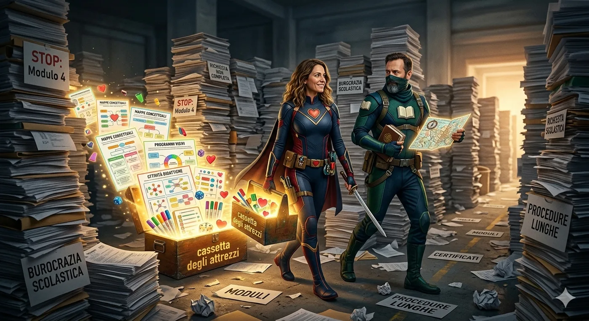
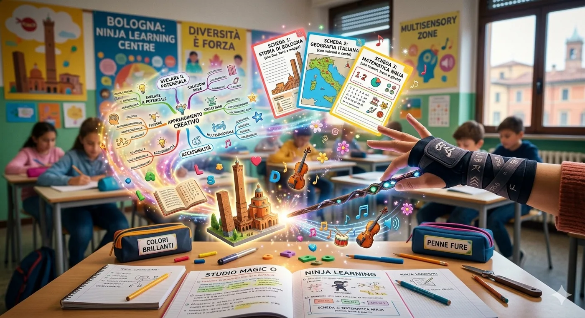
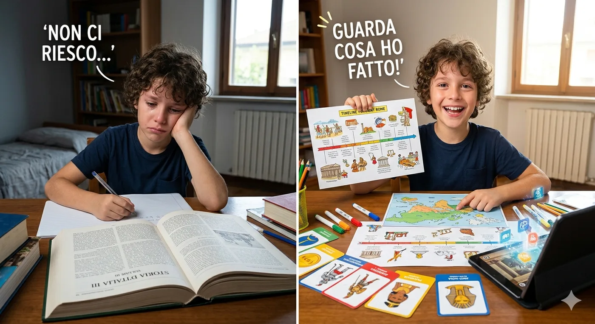

Ciao a tutti, neuro-mamme, neuro-papà e maestri ninja!
Qui la vostra Mary, mamma di tre vulcani neurodivergenti (e sì, ho anche passato anni a fare la doposcuolista, ne ho viste di tutti i colori!). Oggi vi spiego perché i materiali didattici inclusivi non sono un optional, ma la nostra bacchetta magica.
La Neurodiversità è una Festa!

Riconoscere questa varietà significa dare ad ogni bambino il suo superpotere.
Inclusione? È la Ricetta Segreta!
Includere non è mettere un bambino "diverso" in una classe "normale". È creare un ambiente dove tutti, ma proprio tutti, si sentano a casa e possano brillare. Studi e la mia esperienza sul campo lo urlano: quando si include, tutti migliorano! Soprattutto in benessere! L'empatia sale, i cervelli si aprono, e le risate si moltiplicano.

Parliamoci chiaro: quante volte vi siete schiacciati dalla solitudine, persi nel labirinto delle diagnosi o della burocrazia scolastica? Io, mille! Il sistema a volte è un po'... sordo. E noi, mamme e maestri, ci arrabattiamo, ci inventiamo, ci disperiamo e poi... ci rialziamo.
Perché la passione e l’amore per i nostri ragazzi è più forte di ogni ostacolo.
Materiali Inclusivi: Non Solo Carta, ma Soluzioni!

I materiali inclusivi sono strumenti furbi, fatti apposta per diversi stili di apprendimento. Non la solita pappina uguale per tutti! Pensate a mappe mentali colorate, schede con font "amici" della dislessia, attività multisensoriali che fanno divertire e imparare.
Servono a trasformare i "non ci riesco" in "guarda cosa ho fatto!".
Aiutano i nostri bambini a sentirsi capaci, autonomi, speciali.
E a noi? A tirare un sospiro di sollievo!
La Mia Cassetta degli Attrezzi
Nel mio shop trovate chicche nate dalla mia esperienza: schede "anti-noia" per i genietti iperattivi, compiti strutturati per i sognatori, o strumenti visivi che fanno ordine nel caos.
Ho visto i miei bambini con gli occhi che brillano finalmente di soddisfazione.
Una mamma mi ha scritto: "Mio figlio ha sorriso mentre faceva storia. Prima piangeva!".
Che soddisfazione!
Il Futuro è Inclusivo (e Divertente!)
Creare materiali inclusivi non è solo un lavoro, è una missione, una passione.
È dire a ogni bambino: "Sei un genio, a modo tuo!".
E ricordate, dietro ogni ostacolo c'è una mente brillante che aspetta solo gli strumenti giusti per spiccare il volo.
Dai, raccontatemi: qual è il vostro "superpotere" da mamma o insegnante o entrambi?
E cosa vorreste trovare per i vostri piccoli?
Scrivetemi nei commenti! Facciamo squadra!
